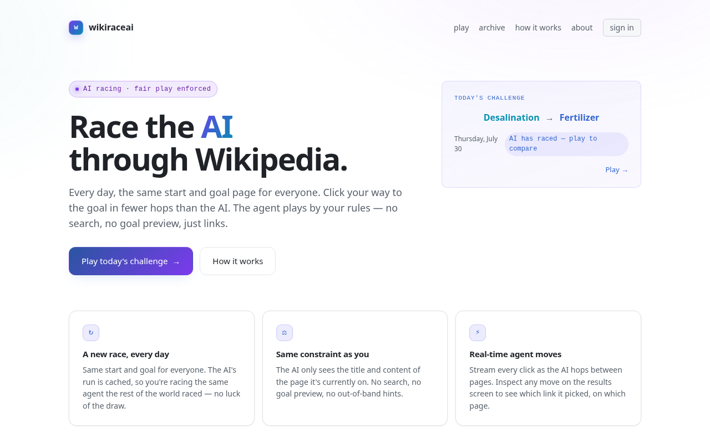

wikiraceai
Designed and built solo.
A daily Wikipedia race against an LLM agent. Everyone gets the same start and goal article, and you click through Wikipedia trying to reach the goal in fewer hops than the AI. The agent plays by your rules: no search, no goal preview, just the links on the page it is reading. Every move it makes is streamed and inspectable, and its run is cached so the whole world races the same agent each day.